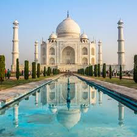

Agra is one of my favorite places because of its beautiful history and magnificent monuments. The Taj Mahal is a world-famous symbol of love, while the city's historic streets add to its charm.
Agra is a historic city in Uttar Pradesh, India. It is famous
for the Taj Mahal, one of the world's most beautiful monuments.
The city also has impressive forts, gardens, and a rich Mughal history.
Agra is a wonderful destination for people interested in history,
architecture, and culture.

📍 Location: Agra, Uttar Pradesh, India
🌤️ Best Time to Visit: October to March
🏰 Famous For: Taj Mahal, Mughal architecture, and historical monuments
To learn more about Agra and its attractions, visit Incredible India. 💖 Agra is a must-visit destination for history lovers!